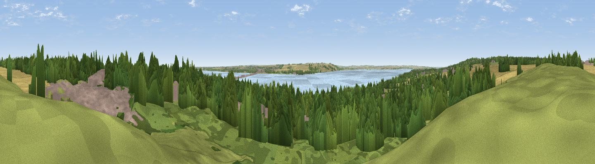
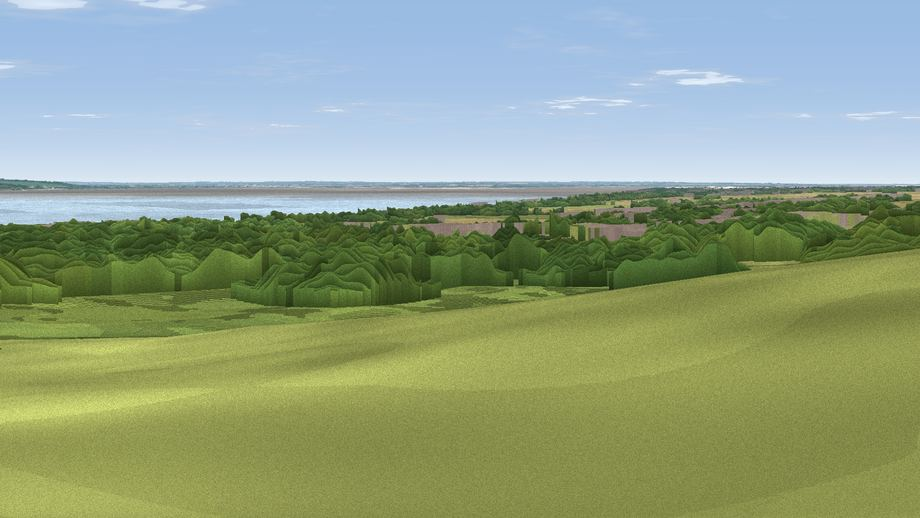
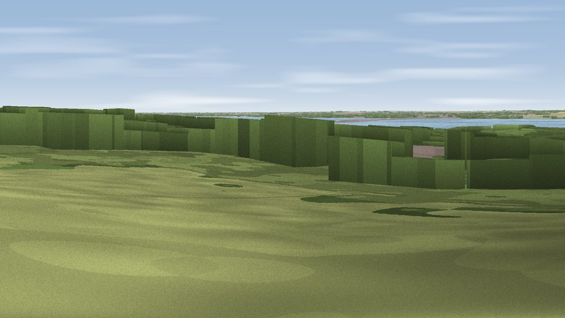

Viewpoint near Hessle
#23929 in England · top 38% of its area beats it · near Hessle · access?Where it is
The exact computed spot (TA 01225 26225). Green wedges show where the rendered camera views below look. Click the marker for map links.
Public access: no public right of way or access land is recorded at this exact spot — it may be on private land. Computed from Natural England's CRoW access layer and OpenStreetMap rights of way — not the legal definitive map. Always verify locally.
The view, rendered

A 360° render of this exact spot computed from the terrain model, tree cover and land cover — summer colours, afternoon light, calibrated against photographs of famous viewpoints. Real trees, hedges and buildings will differ in detail.
Through the camera


Rendered views along the best directions of this panorama.
The panorama
Grey silhouette: terrain skyline in each direction (720 bearings, Earth curvature and refraction included). Dashed green: skyline with trees (+15 m) and buildings (+8 m) as obstacles. Blue strip: how far the ground is visible on each bearing.
Where the view opens
Wedge length = distance to the farthest visible ground on that bearing (vegetation-aware). Rings at 10, 25 and 50 km.
What fills the view
45% woodland · 16% grassland · 13% water · 13% built-up · 12% cropland
Angular shares of the visible panorama (visual magnitude), not map area. Landscape diversity 0.63 (0–1 Shannon).
Key numbers
More beautiful places nearby
The staircase of upgrades: each row has a higher view potential than everything closer. Driving times are estimates from straight-line distance, calibrated against real road routing — check an actual route before setting out.
| Place | Direction | Drive | Score |
|---|---|---|---|
| Viewpoint near Willerby | N · 5 km | ~11 min | 57.9 |
| Viewpoint near South Cave | NW · 10 km | ~20 min | 60.9 |
| Viewpoint near South Newbald | NW · 12 km | ~22 min | 62.3 |
| Viewpoint near South Newbald | NW · 12 km | ~22 min | 64.9 |
| Viewpoint near Nunburnholme | NW · 26 km | ~42 min | 68.5 |
| Viewpoint near Claxby | SSE · 31 km | ~48 min | 70.5 |
| Viewpoint near Claxby | SSE · 32 km | ~50 min | 71.5 |
| Garrowby Hill (A166 crest) | NNW · 37 km | ~55 min | 71.9 |
53.72262, -0.46740 · source: screening · position refined by local search. Computed location — check access rights before visiting.